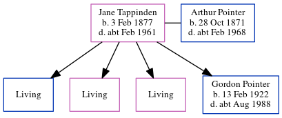

Gordon Pointer 1922 - c1988
[ Home ] | [ Calendar ] | [ Surnames Index ] | [ Errors ] | [ Family History ]A butcher shop's assistant and the child of Arthur Pointer (a sailor) and Jane Tappinden (a market gardener's worker), Gordon Pointer, the second cousin twice-removed on the father's side of Nigel Horne, was born in Eastry, Kent, England on 13 Feb 19221,2,3. On 29 Sept 1939, he was living at Thatch Cottages, Little Statenborough, Kent, England1.
He died c. Aug 1988 in Thanet, Kent, England3.
Parents
- Arthur Thomas was born on 28 Oct 1871
- Jane Maria was born on 3 Feb 1877
Citations
- 1939 Register - Findmypast (was recorded at this address)
- England & Wales births 1837-2006 - Findmypast
- England & Wales deaths 1837-2007 - Findmypast
Media
1939 Register - TNA/R39/1819/1819E/003/11
England & Wales deaths 1837-2007 - BMD/D/1988/7/76911548
England & Wales Births 1837-2006 - BMD-B-1922-1-AZ-001167-140
Family Tree
Map
Generated by ged2site. Last updated on Jul 3, 2024